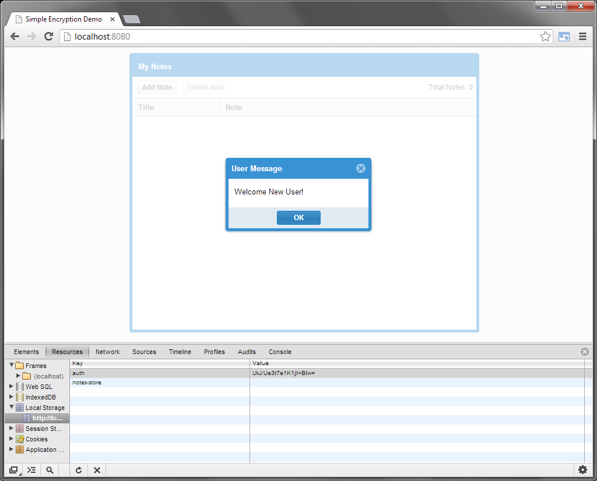
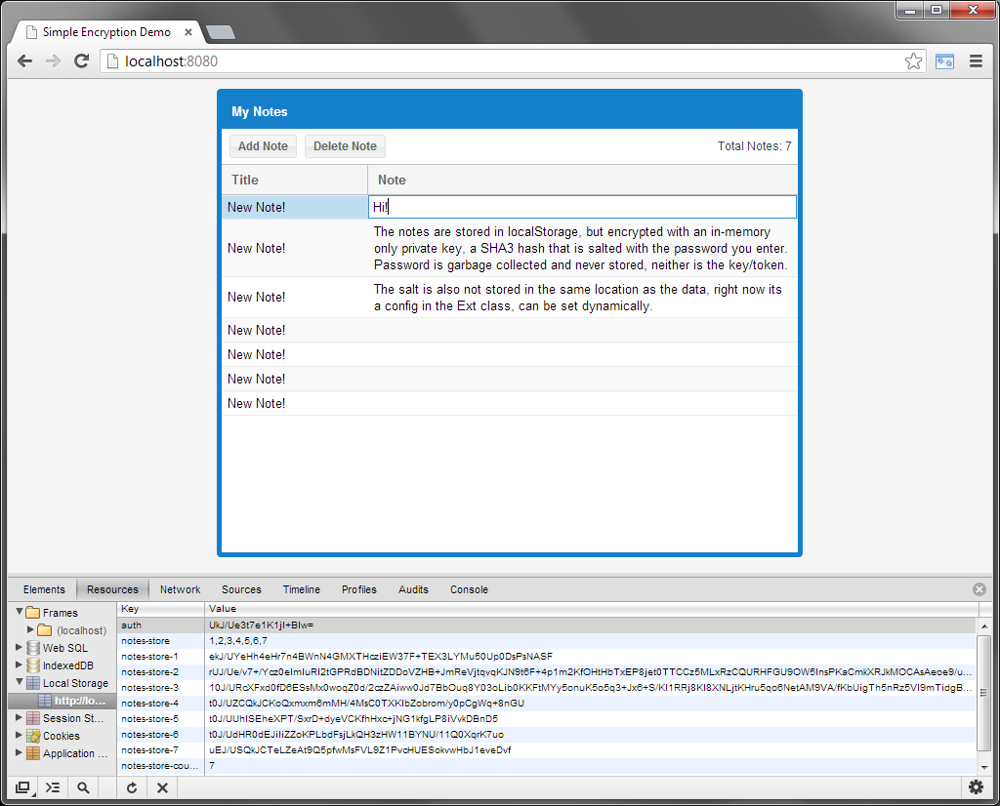
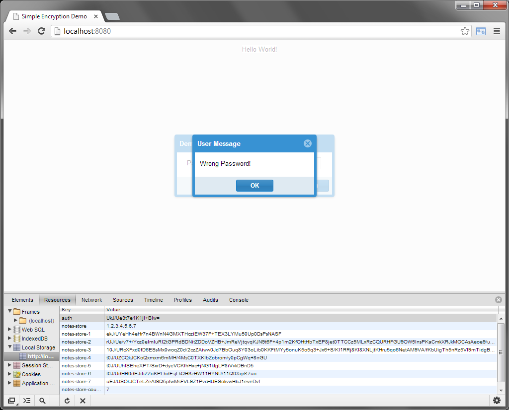
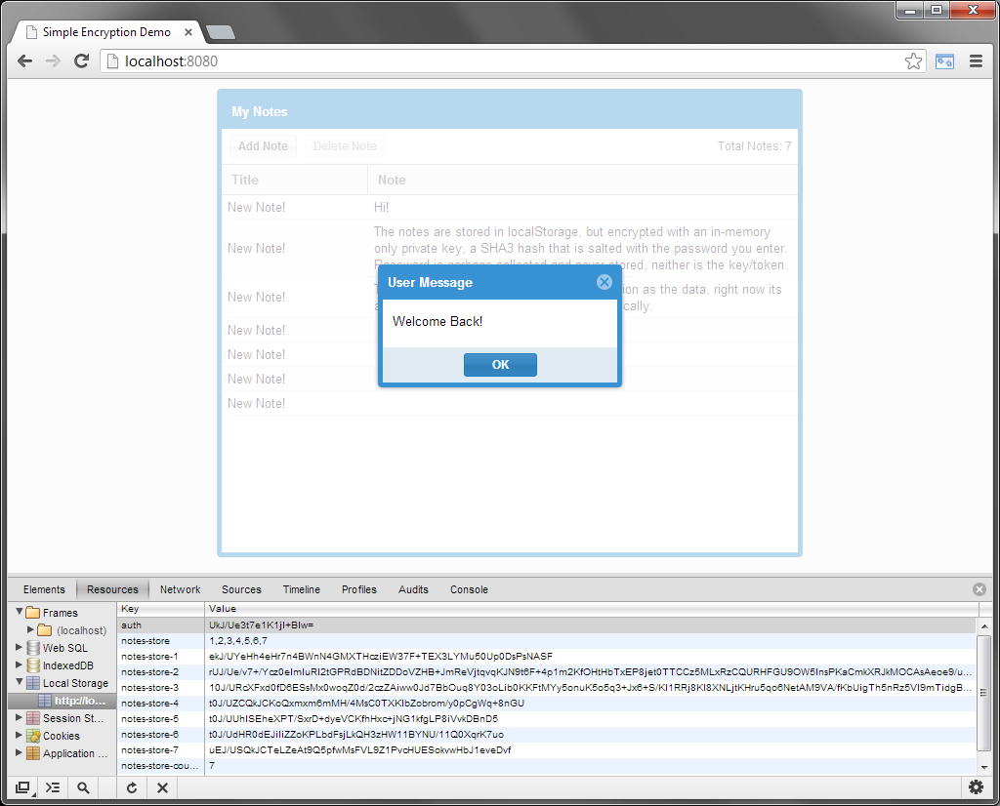

This demo showcases ExtJS using client-side JavaScript AES encryption and SHA3 hashes.
Live Demo
The Encryption class stores a SHA3 hash in a private in-memory var.
The EncryptedLocalStorage proxy class has an api we augment in from the Encryption class.
The demo stores an encrypted string to localStorage for password comparison during login.
The demo uses the proxy extension to store encrypted data to localStorage.
Enter a password, this string will be salted and SHA3 hashed.
The password used is garbage collected and not stored, the salt is also not stored with the data.

Demo will save the encrypted string 'foobar' with your key to localStorage for authorization next time

EncryptedLocalStorage proxy class now automatically encrypts/decrypts to/from localStorage.
In Chrome, load Dev Tools and view Resources tab, Local Storage.

Reload the page, now with an 'auth' item found in localStorage, it will encrypt and compare.

Only when you provide the correct password from before can you continue, setting the proxy and then data can be decrypted and viewable in the grid.
